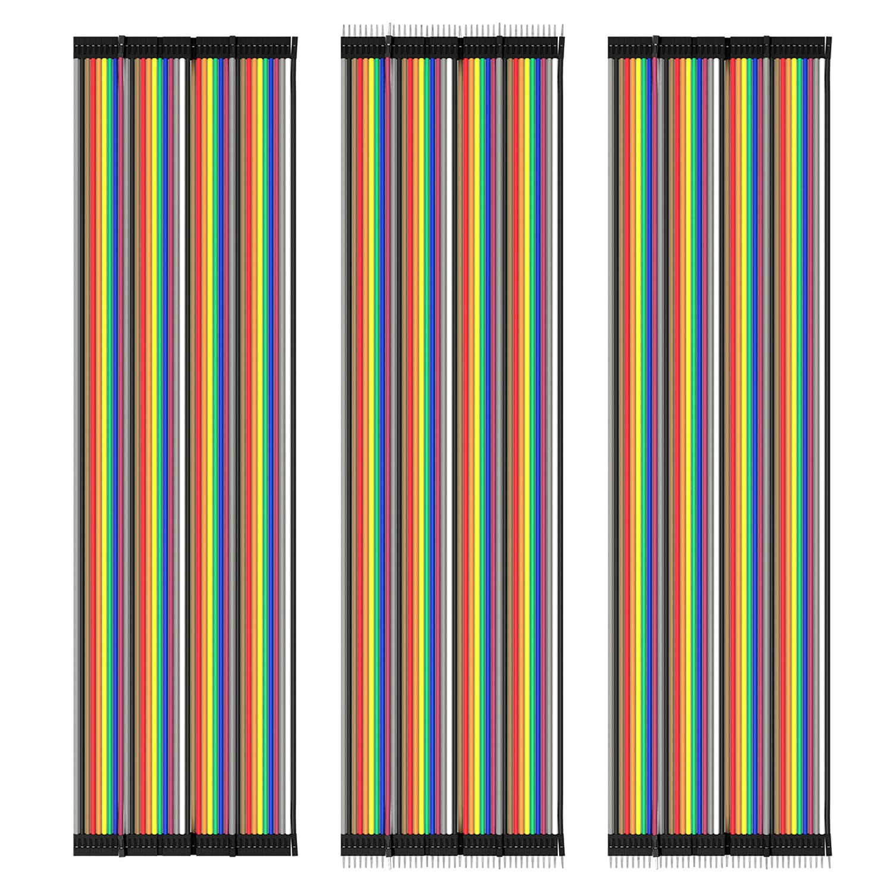

Materials
-
Placa Arduino Uno Rev3

-
Baterías 9v

-
Cable conector batería 9v

-
Cable conector USB 2.0
-
Módulo I2C Arduino

-
Jumperwires
 -
Keypad 4x4

-
LCD 2x16

Muntatge
-
Agafarem la caixa de cartró on posarem tots els components.
-
Ara podem continuar posant la placa Arduino on toca.
-
A continuació farem un forat a la caixa on anirà el nostre display lcd 2x16.
-
Posarem el display dins el forat y conectarem, GND (I2C) amb GND (arduino),
VCC (I2C) amb 5V (arduino), SDA (I2C) amb A4 (arduino) i SCL (I2C) amb A5 (arduino).
-
Conectarem el keypad 4x4 al arduino als següents pins, 0-7.
-
El keypad 4x4 ha de quedar de la manera següent.
L'enganxaré per què es quedi fixe en aquesta posició.

-
Connectarem el cable connector de la pila amb la batería de 9V.
-
Ara podem connectar el cable connector de la pila amb el connector jack de l'arduino.

-
Aixì quedaríen les conexions. Ara ja tenim la calculadora funcionant.

Codi Arduino
#include <Key.h>
#include <Keypad.h>
#include <Wire.h>
#include <hd44780.h> // main hd44780 header
#include <hd44780ioClass/hd44780_I2Cexp.h> // i2c expander i/o class header
//LCD I2C inicialización
hd44780_I2Cexp lcd; // declarar objeto lcd: localización automática y chip expansor de configuración
// geometría LCD
const int LCD_COLS = 16;
const int LCD_ROWS = 2;
double num1,num2 ;
double total;
char operation,button;
const byte ROWS = 4; // Four rows
const byte COLS = 4; // Three columns
// Definir el mapa de teclas
char keys[ROWS][COLS] = {
{'1','2','3','+'},
{'4','5','6','-'},
{'7','8','9','*'},
{'=','0','%','/'}
};
byte rowPins[ROWS] = { 7, 6, 5, 4 };// Conecte el teclado ROW0, ROW1, ROW2 y ROW3 a estos pines Arduino.
byte colPins[COLS] = { 3, 2, 1, 0 }; // Conecte el teclado COL0, COL1 y COL2 a estos pines Arduino.
Keypad kpd = Keypad( makeKeymap(keys), rowPins, colPins, ROWS, COLS ); // Crear el teclado
void domath() // Caso de interruptor simple para elegir qué operación hacer, según el botón presionado por el usuario.
{
switch(operation)
{
case '+': // Suma
total = num1+num2;
break;
case '-': // Resta
total = num1-num2;
break;
case '/': // Division
total = num1/num2;
break;
case '*': // Multiplicación
total = num1*num2;
break;
case '%': // Porcentaje
total = (int)num1%(int)num2;
break;
}
// Basado en el caso seleccionado imprime resultado total y
lcd.setCursor(0,1);
lcd.print('=');
lcd.setCursor(1,1);
lcd.print(total);
}
void setup() {
int status;
// inicializar LCD con número de columnas y filas:
// hd44780 devuelve un estado de begin() que se puede usar para determinar si la inicialización ha fallado.
status = lcd.begin(LCD_COLS, LCD_ROWS);
if(status) // el estado distinto de cero significa que no tuvo éxito
{
status = -status; // convertir el valor de estado negativo en un número positivo
// begin () ha fallado, así que parpadeeará el código de error usando el LED integrado si es posible
hd44780::fatalError(status); // does not return
}
// la inicialización fue exitosa, la luz de fondo debería estar encendida ahora
// Imprimir un mensaje en la pantalla LCD
lcd.print("Calculator Davide");
}
void loop()
{
// Los bucles son convenientes para leer la pulsación de tecla desde el teclado
while(1) // Primer bucle. Composición del primer número. Hasta que el operador presionó
{
button = kpd.getKey(); // Botón de lectura
if (button >='0' && button <='9') // Si el usuario presionó un valor numérico, 1 carácter a la vez.
{
lcd.clear();
num1 = num1*10 + (button -'0'); //Composición del primer operando
lcd.setCursor(0,0); // Seleccione la primera fila en LCD
lcd.print(num1); // Imprimir número num1
}
//Operador de entrada(
if (num1 !=0 && (button=='+' || button=='-' || button=='*' || button=='/' || button=='%'))
{
operation = button; // operación recuerda qué operación matemática quiere el usuario en los números
lcd.setCursor(0,1); // coloque el cursor en la fila 2
lcd.print(operation); // Imprimir nuestra operación
break;
}
}
while(1) // Segundo bucle. Introducción del segundo operando. Hasta que se presiona '='
{
button = kpd.getKey(); // Lectura de tecla
if (button >='0' && button <='9') // Obtener caracteres del teclado para el segundo número
{
num2 = num2*10 + (button -'0'); //Composición de la segunda operación
lcd.setCursor(1,1); // Seleccione la segunda fila, la segunda columna en LCD
lcd.print(num2); // Imprimir operación actual2
}
if (button == '=' && num2 !=0) //Hacer el cálculo si se presiona '='
{
domath(); //Llama a la subrutina domath()
break;
}
}
while(1) // Limpiando la pantalla para el próximo cálculo
{
//Espera a que se presione la tecla '=' para que pueda restablecer el programa y comenzar de nuevo.
button = kpd.getKey();
if (button =='=')
{
lcd.clear();
lcd.setCursor(0,0);
num1=0;
num2=0;
total=0;
operation=0;
break;
}
}
}